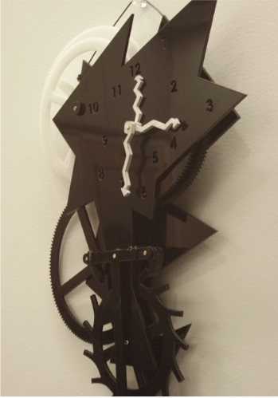
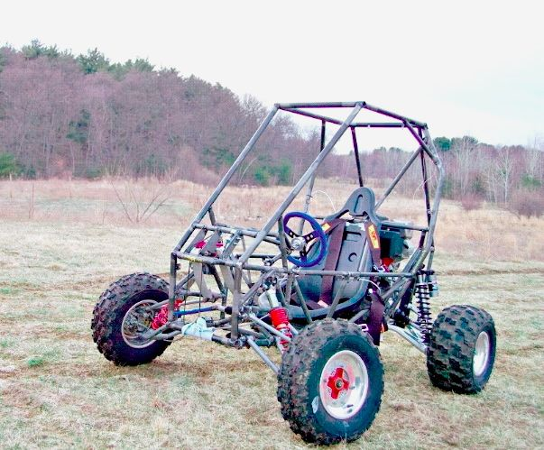
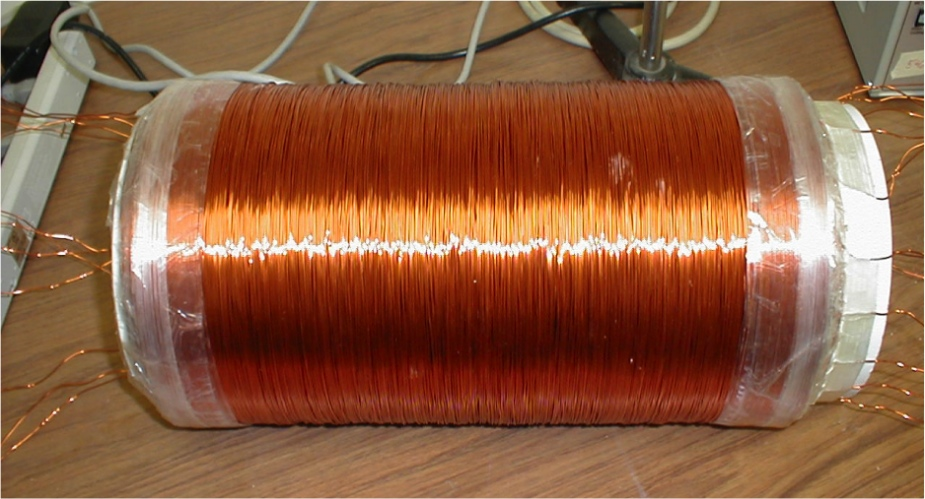

2007
| Mechanical Clock |
Dec 2007 |
Two classmates and I worked together to design and build a
mechanical clock. The clock, made of lasercut Delrin plastic,
used a Swiss-lever escapement and pendulum to keep time.

engineering model of the final clock assembly
|
|
initial design sketches
|
Swiss lever escapement
|
|

final, assembled clock
|
 |
Daniel Grieneisen, Christina Powell |
| Bio-inspired Swimming Toy |
Nov 2007 - Dec 2007 |
I designed a shark-inspired swimming toy for children as
part of my Design Nature course. The waterproof toy was
powered by a single servo motor and onboard electronics.
|
conceptual sketches
|
early CAD model
|
|
final, assembled swimmer
|
presenting the toy to fourth grade students
|
|
Andrea Lai, Katie Sullivan |
| Baja SAE Autimotive Design |
Oct 2007 - Dec 2009 |
Interested by the inner workings of cars, I joined the
Olin College Phoenix Racing team.
Along with a team of other engineering students, we designed
and built an off-road vehicle in our spare time to compete
in the SAE Mini Baja competition. As part of the team
charged with designing the chassis, I helped design a
rules-compliant frame and performed a series of structural
engineering tests (finite element analysis). I further
helped with machining and designing the electrical system.

finite element analysis of 2008 chassis
|
|

vehicle during testing
|

team at competition
|

final adjustments
|

vehicle at competition
|
|
team of 20+ students |
| Biomimetic Jumping Mechanism |
Sept 2007 - Oct 2007 |
I designed, prototyped, simulated, and built a mechanism
inspired by a grasshopper that could jump several body
lengths. The final mechanism was built with lasercut
Delrin plastic and latex tubing.

engineering model of jumping mechanism
|
|
early sketchbook idea
|
foamboard prototype
|
| Physics Research Project |
Jan 2006 - May 2007 |
After a series of electronics failures at Brookhaven National
Laboratory (BNL) of equipment near the particle detectors, I
examined the effects of fringe magnetic fields (50-200 Guass) on cooling fan
behavior. I found that the fan's response is highly dependent
on the orientation with respect to the field – an observation
that matched the failure pattern. My results were presented
at BNL and CERN and I gave poster and oral presentations at
the American Association of Physics Teachers / American
Astronomical Society joint meeting in January 2007.

detector at Brookhaven National Lab (source: BNL)
|

AAS / AAPT joint meeting in Seattle
|
|

custom test solenoid
|

test setup
|
|
Fr. Thomas McShane (faculty) |
 |
Metropolitan Science and Engineering Fair: 1st place Physics, Computer Science, & Engineering project; 3rd place Grand Prize; 2nd place Armed Forces Award, University of Nebraska at Lincoln Best Engineering/Physics Project
Nebraska Junior Academy of Sciences: Herbert Hoover Young Engineer Award; Finalist |
previous year | timeline | next year